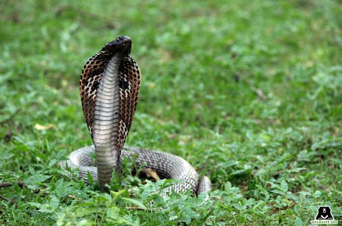

HOME:MYTHBUSTER: SUPERSTITIONS SURROUNDING WILD ANIMAL
Mythbuster: Superstitions Surrounding Wild Animals.
We were all told tales as children – many of which are considered superstition and relatively harmless.
Growing up in India, we’ve often heard things like “don’t stray across the path of a black cat,” or “an itch on
the palm means wealth is headed your way” and the like.
Amongst many others, our country’s wildlife has faced a rising threat from superstitious beliefs over the
years, and these are far from innocuous. From the belief that elephant tusks and elephant hair bring good
luck to the faith that sacrificing owls in rituals can bring fortune – many such concepts continue to exist
even today, endangering the lives of countless wild animals across the country. This can affect entire
ecosystems, and despite a strong legal framework in place, these unfortunate practices continue under the radar.
Here are some commonly believed superstitions that affect some of the animals’ Wildlife SOS works with:
Bengal Tiger: The claws of a tiger are believed to bring good luck, and the genitals are believed to be
aphrodisiacs. Tiger pelts are in great demand in the black market and so are their teeth and whiskers,
which are said to ‘ward off the evil eye’.
The Bengal Tiger is protected under Schedule I of the Wildlife Protection Act, 1972 but despite the strong
level of protection granted by the law of the land, these big cats continue to fall prey to threats such as jaw
traps, snares, electrocution, poisoning and illegal wildlife trade. Our anti-poaching unit ‘ForestWatch’ has
assisted enforcement authorities in busting many poachers in the past resulting in the recovery of tiger
skins, claws and other wildlife contraband from these traffickers.
Tiger skins are highly coveted by occultists and their practices, making it one
amongst the many reasons for tiger poaching. [Photo (c) Wildlife SOS]
Red Sand Boa: Red sand boas have various superstitious myths and beliefs attributed to them because of
their double-headed appearance and are often referred to as “Do muha” in Hindi.
This particular snake species is in danger of mass smuggling as there is a very high demand for them in
China and Nepal, and even in western countries. In India, where the superstitious practice of snake
charming still exists, people are often misguiding into believing that a sighting of these ‘two-headed’ snakes
can bring good luck to households. These snakes are highly coveted and sold in the country’s black markets
because of such blind faith. Red sand boas are protected under Schedule IV of the Wildlife Protection Act, 1972.
Every year, especially during the month of Shravan (monsoon), Wildlife SOS rescues countless snakes
in terrible conditions from snake charmers and rehabilitates them into their natural habitats upon recovery.
Tiger skins are highly coveted by occultists and their practices, making it one
amongst the many reasons for tiger poaching. [Photo (c) Wildlife SOS]
Cobra snake: The Cobra is one of the most revered animal species in India, and at the same time highly
feared as it is one of the deadliest snakes found in the country. There is also a long string of baseless
beliefs attached to their existence leading to escalating incidents of conflict with humans. A major part of
the superstition stems from snake charmers who use cruel methods such as sewing and taping the mouth
of the snake, or by breaking their fangs in order to render them “safe” or “harmless”.
Every Naga Panchami, cobra snakes are offered milk in the belief that they will drink it. In reality, snakes
cannot digest milk at all! Their venom glands are often brutally removed by snake charmers so that they
can be exhibited to large crowds – confused and dehydrated. The Cobra snake is protected under Schedule
II of the Wildlife Protection Act, 1972.
Wildlife SOS is well-equipped to deal with rescues involving highly venomous snakes like the Cobra.
Countless Cobras are still found languishing, neglected, starved and dehydrated, in snake charmers’
baskets, their venom glands and fangs brutally mutilated or removed to reduce the dangers to the handler.

The cobra snake is another victim of the cruel snake charming practice which is a result
of local superstition. [Photo (c) Wildlife SOS]
Indian Star Tortoise: The Indian star tortoise is considered to be a symbol of good luck. It is also believed
to hold great value in traditional eastern medicine and its meat is considered a delicacy in other places,
thus making it a highly coveted option for poachers looking to make a quick buck. Every year, tens of
thousands of star tortoises are poached from the wild and smuggled via railway, airplanes, or even ships
nationally and globally. There is also a high demand for Indian Star tortoises in the exotic pet trade as they
have a unique star-like radiating pattern on their carapace (shell).
This species is protected under Schedule IV of the Wildlife Protection Act, 1972 and is listed as ‘vulnerable’
by the International Union for Conservation of Nature (IUCN). At the 2019 CITES summit, they were moved
from Appendix II to Appendix I status after a vote by a majority by nations participating in CITES. While
hopes soar that these measures can provide more protection to the tortoise both in India, where it’s illegal
to own or trade them commercially, and internationally, worries persist due to the recent spike in the trade
surrounding the species.
Wildlife SOS has successfully released 51 Indian star tortoises that are part of our Indian Star Tortoise
Repatriation Project into their native habitats and has been monitoring them through a unique and
innovative satellite telemetry study. These star tortoises were confiscated by authorities in Singapore,
luckily before they were put on the black market to be sold as pets or food.
As a part of the research study, factors like health condition, body weight, behaviour patterns, adaptation
to wild foraging etc are also being documented. The research team also tracks and monitor the movements
and ranging patterns of the tortoises.
The Star Tortoise’s irradiated carapace is what makes it extremely desirable
for superstitious followers. [Photo (c) Wildlife SOS]
Golden Jackal: Very popular on illicit online markets, the ‘jackal horn’ is a talisman derived from the skull
of a golden jackal. While conservation efforts are broadly focussed on more ‘charismatic’ species like tigers,
lesser noticed animals like India’s golden jackals are facing the brunt of a more niche superstitious demand.
The ‘jackal horn’ is believed to be a talisman to ward off ‘the evil eye’ and protect the wearer. Apart from
this, jackal skins and tails are also in great demand.
Wildlife SOS frequently rescues Golden Jackals caught in conflict situations, trapped in borewells and from
poachers’ snare and jaw traps. These traps are a very cruel way of trapping animals and often lead to
grievous injuries or fatalities.
Jackal horns’ are believed to be powerful talismans in local superstition.
[Photo (c) Wildlife SOS/Akash Dolas]
Leopards: The myths around big cats are fairly common, and the same is the case with the Indian leopard.
Everything from its teeth to skin is considered to hold different mystical properties. People believe that
keeping the teeth on one’s person offers protection and brings money. Leopards are accorded protection
under Schedule I of the Wildlife Protection Act, 1972.
Wildlife SOS’ anti-poaching unit ‘ForestWatch’ has enabled the capture of many illegal leopard poachers
through a vast network of informers and providing aid to enforcement authorities. Leopard skins and teeth
are some of the contraband seized from these wildlife traffickers.
Apart from man-animal conflict, leopards also face threats from superstition-driven
beliefs that endanger their lives. [Photo (c) Wildlife SOS/Akash Dolas]
.png)